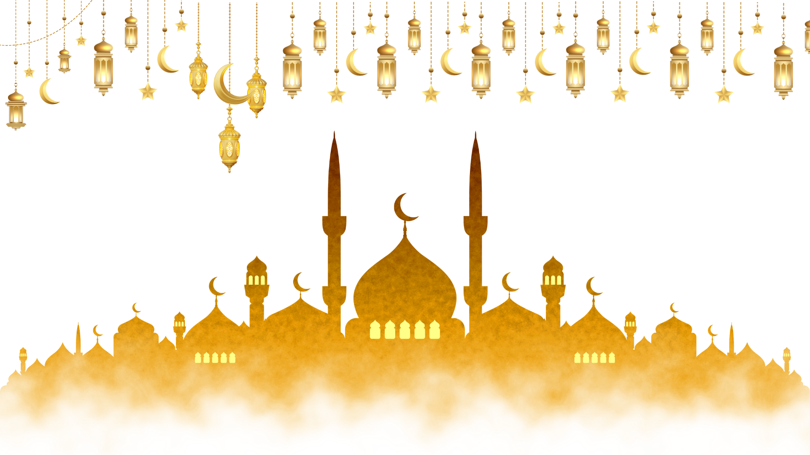
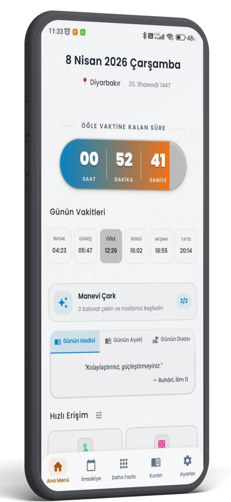
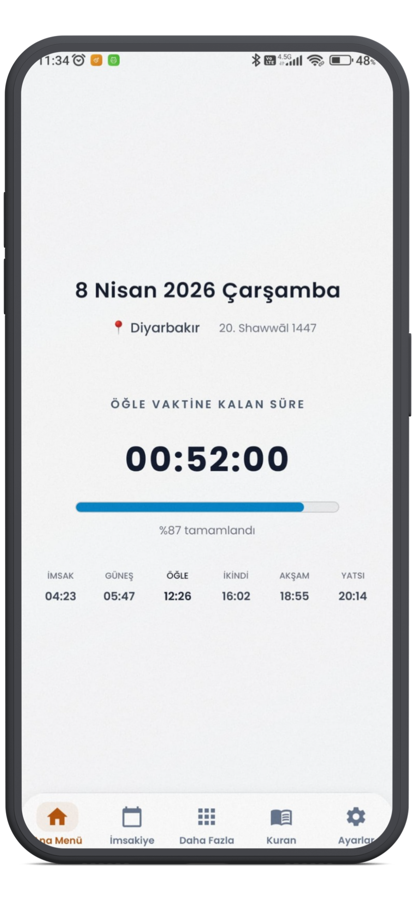

Namaz vakitleri, dijital Mushaf, şık imsakiye ve gelişmiş kıble pusulası ile maneviyatınızı tek bir uygulamada toplayın.

Vakit360, günlük ibadetlerinizi takip edebilmeniz için ihtiyacınız olan her şeyi modern bir arayüzle sunar.
Bulunduğunuz konuma göre Diyanet uyumlu, saniyesi saniyesine doğru vakitleri takip edin.
Yüksek çözünürlüklü aslına sadık sayfalarla Kur'an-ı Kerim okumanın huzurunu telefonunuzda yaşayın.
İnternet bağlantısı olmadan bile Kabe'nin yönünü cihazınızın sensörleriyle en doğru şekilde bulun.
Vakit öncesi bildirimler ve Ezan okuma özellikleriyle hiçbir namazı kaçırmayın.
Özel günleri önceden görün, Ramazan ayında aylık imsakiye ile tüm ayın planını yapın.
Karanlık ve aydınlık mod destekli, mat renklerle tasarlanmış zarif arayüz.
— A'râf Suresi, 204 —
Gelişmiş Kur'an-ı Kerim modülü ile surelere kolayca ulaşın.

Tüm dini ihtiyaçlarınızı karşılayacak Vakit360'ı cihazınıza kurun, manevi dünyanızı zenginleştirin.
Soru, görüş, destek ve iş birlikleri için kurumsal e-posta hattımızdan bize 7/24 ulaşabilirsiniz.